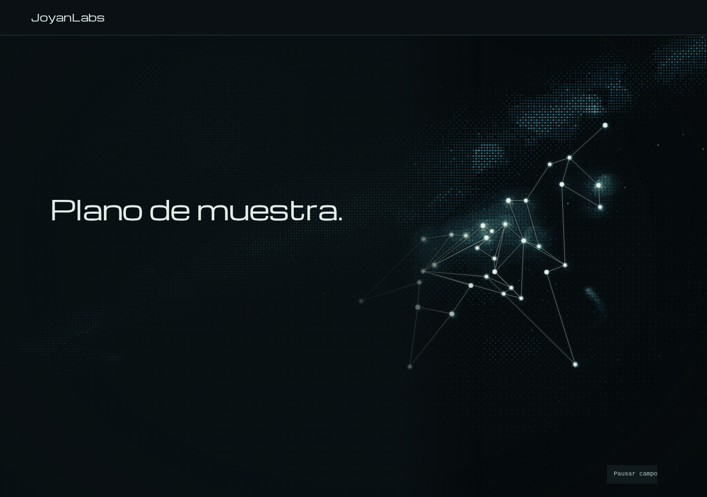
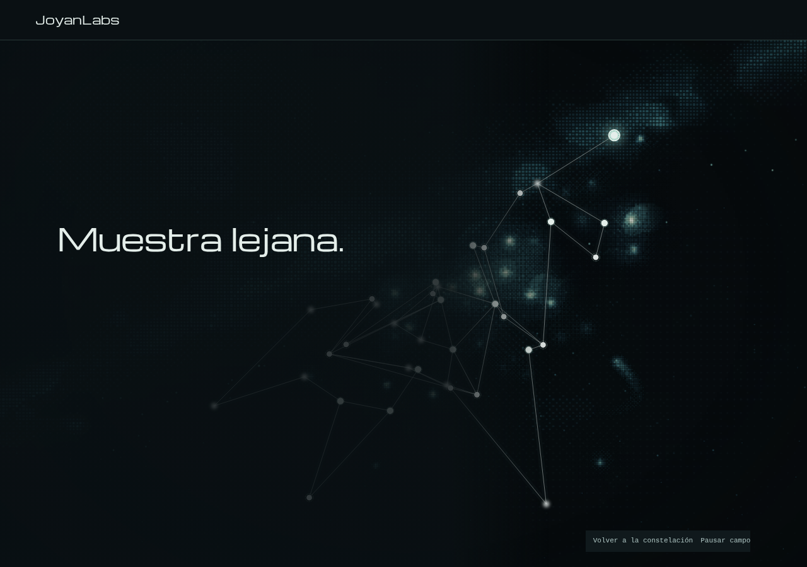
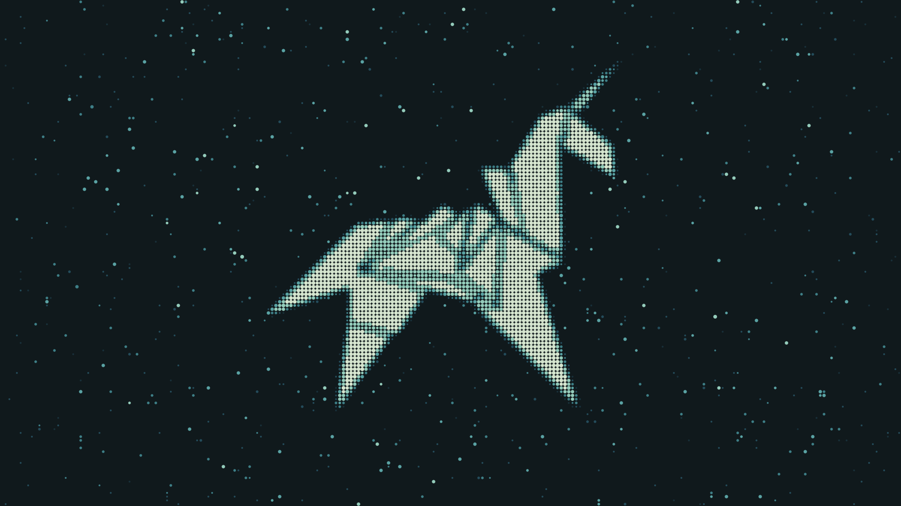
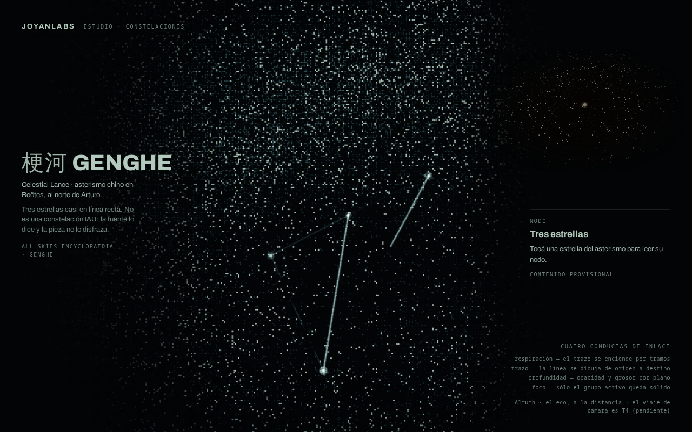

Comparar · 2026-11-05
Misma familia cromática, tres grados distintos de cuerpo. Mirá las tres y decime cuál es la vara: lo que sigue se construye con esa vara, no con umbrales.
La que la dirección aprobó el 29-10. Tiene nebulosa con masa a la derecha, bolsillo tranquilo donde vive el titular, anillo denso que devuelve la mirada a la figura, y nodos con enlaces por encima. El paralaje por capas es lo que la hace sentir profunda al interactuar.


El SVG del unicornio por nuestro pipeline con estrellas + lavado + viñeta. El sujeto tiene
masa, el campo es escaso (densidad 0,045, con keep 0,7 para no perforar el dibujo) y la viñeta
cierra el cuadro. Es la referencia de «material con cuerpo».

La constelación como dato: cinco capas, cuatro conductas de enlace, contenido por nodo. Funciona y se mide, pero el cielo es una alfombra pareja y la figura son tres puntos: sin masa y sin bolsillo tranquilo. Esto es lo que hay que rehacer.

Mi recomendación: el híbrido, y ya sabemos cuál es. El híbrido no es una invención nueva: es exactamente la receta del v1. Cuerpo atmosférico con masa (nebulosa + lavado) + figura de estrellas y enlaces por encima, con un bolsillo tranquilo alrededor y la viñeta cerrando.
Genghe no necesita una idea distinta: necesita recuperar la composición. Sujeto con masa, campo escaso, bolsillo limpio y anillo denso que devuelva la mirada.